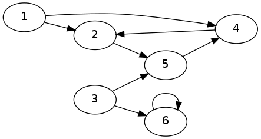
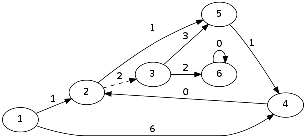

This is the second episode of my series on the Boost Graph Library. You might want to read part 1 before going on. As before, our primary source is the Quick Tutorial that you can find on the BGL web page.
At the end of this post, you will be able to apply one of the existing graph algorithms implemented in the BGL. We will also cover the notion of vertex descriptor along the way.
We are analyzing a graph G of 6 vertices:

In the previous installment, we had created the graph and simply printed the indices of the vertices. Now, we are going to see how to apply Dijkstra's algorithm to our graph.
In order to apply the algorithm, we slightly modify our graph so as to contain one more edge, and assign weights to the edges, obtaining the following result (the new edge is dashed):

First, let's modify our graph to add an Edge property. We have said that properties can be attached to a BGL graph; there are, however, two types of properties. Internal properties are intrinsically related to the graph itself: for example, the weight of an edge. There are other properties, called external properties, which are only attached to the components of the graph by an algorithm, like the color of a vertex.
The Graph constructor provides slots that can be filled with properties.
template <class OutEdgeListS = vecS, class VertexListS = vecS, class DirectedS = directedS, class VertexProperty = no_property, class EdgeProperty = no_property, class GraphProperty = no_property, class EdgeListS = listS> class adjacency_list
As you can see, the slot reserved to the EdgeProperty is the fifth. To fill all the slots before that, which we do not really care of presently, we can use the convenient structure no_property, not surprisingly defined as:
struct no_property {};
So the only modification we want to apply to the graph defined in the previous post is:
typedef adjacency_list<vecS, vecS, directedS, no_property, property<edge_weight_t, int>> Graph;
This way, we are stating that the edges of our graph have a property, the weight, whose type is an int. The property is attached to the Graph and can be used by the relevant algorithms.
To understand what we need to feed to Dijkstra's algorithm in the BGL, let's have a look at the prototype that we are going to use:
template <class VertexListGraph, class Param, class Tag, class Rest> inline void dijkstra_shortest_paths (const VertexListGraph& g, typename graph_traits<VertexListGraph>::vertex_descriptor s, const bgl_named_params<Param,Tag,Rest>& params)
This is the simplest form of the algorithm, and it does a lot of work for you. To call it, we only need the graph, the descriptor of the vertex that must represent the source from which the distances are to be computed (more on descriptors in a bit), and finally a reference to a some structure containing the parameters. Now this last bit is actually our algorithm return type, and we just pass a RandomAccessIterator on some container holding the weights of the edges, in the order we have used when describing them.
Graph representations are not all created equal, of course. To refer to a vertex, or to an edge, some representations store pointers to vertex objects, other store vertex objects themselves. Using the BGL, we do not want to care: we refer to an opaque data structure known as _vertexdescriptor, listed among the graph_traits of a Graph object. Functions, like edges() or adjacent_vertices(), and functions on property_maps, all rely on the Graph describing the way it wants to store the vertices (and the edges).
This said, let's get back to work.
To apply Dijkstra's algorithm, we need a start vertex and a list that can hold enough elements for receiving the distances from the start vertex. We do this by defining:
vector<int> distances(num_vertices(g)); V start = *(vertices(g).first);
The final touch is a breeze:
dijkstra_shortest_paths(g, start, distance_map(&distances[0]));
You can have a look at the complete example in this gist.
Printing the results show the following:
distances from start vertex:
distance(0) = 0
distance(1) = 6
distance(2) = 1
distance(3) = 4
distance(4) = 5
We know from graph theory that Dijkstra does not work well if a weight is negative (it is related to the fact that passing through the negative-weighted edge keeps on decreasing the cost of the path, so it might generate infinite loops). In case by accident we put in a negative weight, the library is so kind as to remind us of our mistake:
what(): The graph may not contain an edge with negative weight.
In the next installment, we are going to show what a visitor is in this context, and how we can use it.